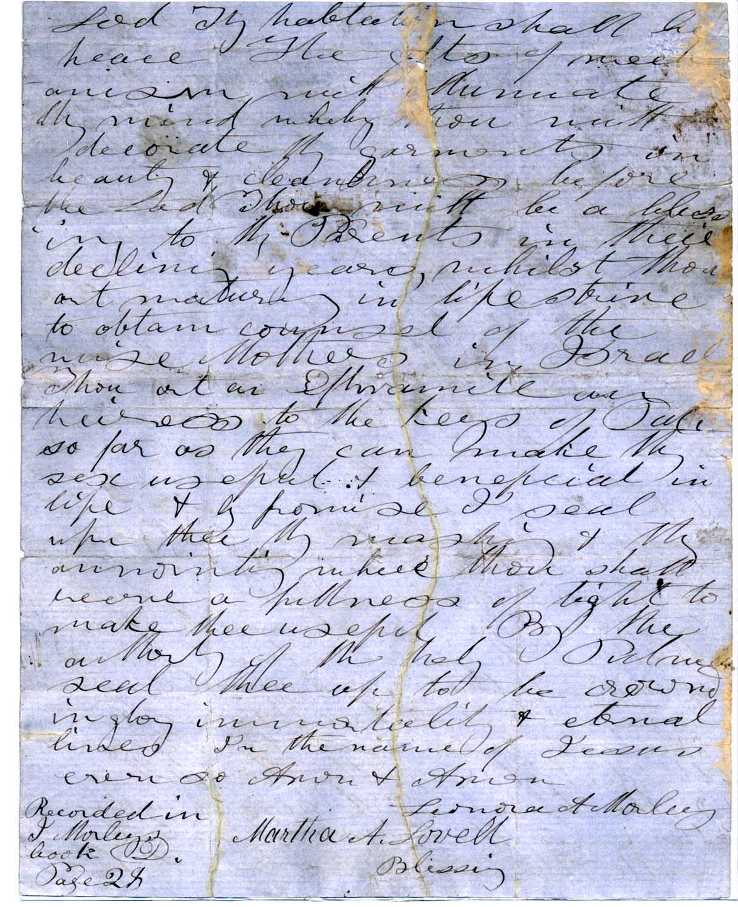
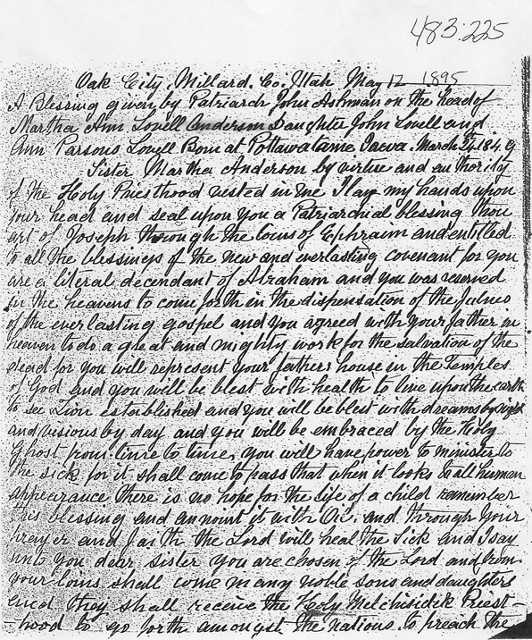

Filmore City Dec. 11, 1855
A patriarchal blessing by Isaac Morley on the head of Martha Ann Lovell daughter of John and Ann Lovell born March 24, 1849 in Potawotomie Co. Iowa
Sister Martha A we lay our hands upon thy head in the name of Jesus and we seal upon thee by the authority of the P.h. the blessing of thy Father Hearken to the counsel of thy parents for this is the first command by promise to children and there will be no blessing to be withheld. Thou shalt have the seals of the Priesthood in honor before the Lord. The Lord will endue thee with fidelity and with virtue which thou wilt be beloved by the Lord and by thy brethren. The Lord will bless these with intellectual faculties of mind that will make thee useful and respected in life The comforter will be thy guide the dictator of thy thoughts and the time will come when thou wilt be associated with the anointed of the Lord Thy habitation shall be peace The gifts of mechanism will illuminate thy mind whereby thou wilt decorate thy garments in beauty and cleanliness before the Lord Thou wilt be a blessing to thy parents in their declining years whilst thou art maturing in life strive to obtain counsel of the wise mothers in Israel Thou art an Ephraimite an heiress to the keys of Priesthood so far as they can make thy sex useful and beneficial in life and by promise I seal upon thee thy washing and thy anointing where thou shalt have a fullness of light to make thee useful. By the authority of the holy Priesthood seal thee up to be crowned in glory immortality and eternal lives In the name of Jesus even so Amen and Amen.
Leonora A. Morley
Martha A. Lovell Blessing
Recorded in I Morleys book D
Page 28
(Other blessing)
Patriarchal Blessing
Martha Anderson by virtue and Authority of the Holy Priesthood vested in me, I lay my hands upon your head and seal upon you a Patriarchal blessing.
Thou art of Joseph, through the loins of Ephriam and entitled to all the blessings of the new and everlasting covenant, for you are a literal descendant of Abraham and you was [were] reserved in the Heavens to come forth in the dispensation of the fulness of the everlasting Gospel and you agreed with your Father in Heaven to do a great and mighty work for the salvation of the dead for you will represent your Father's house in the Temple of God. And you will be blessed with health to live upon the earth to see Zion established; and you will be blessed with dreams by night and visions by day; and you will be imbrased [embraced] by the Holy Ghost from time to time; you will have power to minister unto the sick, for it shall come to pass that it looks to all human appearance there is no hope for the life of a child remember this blessing and anoint it with oil, and through your prayer in faith the Lord will heal the sick, and I say unto you dear sister you are chosen of the Lord, and from your loins shall come many noble sons and daughters, and they shall recieve the Holy Melchisedek Priesthood to go forth amongst the nations to preach the everlasting Gospel to the sons of God and some of them shall bear this testimony that Angels have ministered unto them and you will be crowned a queen unto your husband to rule in the house of Israel forever and to your Posterity there shall be no end and in your declining years you shall rejoice exceedingly and see your posterity that will rise up and call you blessed and you with your husband will recieve and [an] inheritance in the Center Stake of Zion. And I seal upon you the blessings of Health and strength and all you[r] former blessings, and I seal you up unto eternal life to come forth in the morning of the first resurrection clothed with immortality and eternal life. And upon you[r] head a crown of celestial glory in the name of Jesus amen.
Joseph Finlinson Scribe
(Another blessiing, given in 1895)
Oak City, Millard, Co. Utah May 12, 1895
A Blessing given by Patriarch John Ashman on the head of Martha Ann Lovell Anderson Daughter [of] John Lovell and Ann Parsons Lovell Born at Pottawatome Iowa, March 24, 1849
Sister Martha Anderson by virtue and authority of the Holy Priesthood vested in me I lay my hands upon your head and seal upon you a Patriarchal blessing. Thou art of Joseph through the loins of Ephraim and entitled to all the blessings of the new and everlasting covenant for you are a literal descendant of Abraham and you was reserved in the heavens to come forth in the dispensation of the fulness of the everlasting gospel and you agreed with your father in heaven to do a great and mighty work for the salvation of the dead for you will represent your father's house in the Temples of God and you will be blest with health to live upon the earth to see Zion established and you will be blest with dreams by night and visions by day and you will be embraced by the Holy Ghost from time to time. You will have power to minister to the sick for it shall come to pass that when it looks to all human appearance there is no hope for the life of a child remember this blessing and anoint it with Oil and through your prayer and faith the Lord will heal the Sick and I say until you dear sister you are chosen of the Lord and from your loins shall come many noble sons and daughters and they shall receive the Holy Melchizedek Priesthood to go forth amongst the nations to preach the everlasting Gospel to the Sons of God and some of them shall bear this testimony that angels have ministered unto them and you will be crowned a Queen unto your husband to rule in the house of Israel forever and to your posterity there shall be no end and in your declining years you shall rejoice exceeding and see your posterity that will rise up and call you blessed and you with your husband will receive an Inheritance in the center Stake of Zion and I seal upon the blessings of health and strength and all your former blessings and I seal you up unto eternal life to come forth in the morning of the first resurrection clothed with immortality and eternal life and upon your head a Crown of Celestial Glory In the name of Jesus Christ Amen.
Robt W Reeve Scribe
